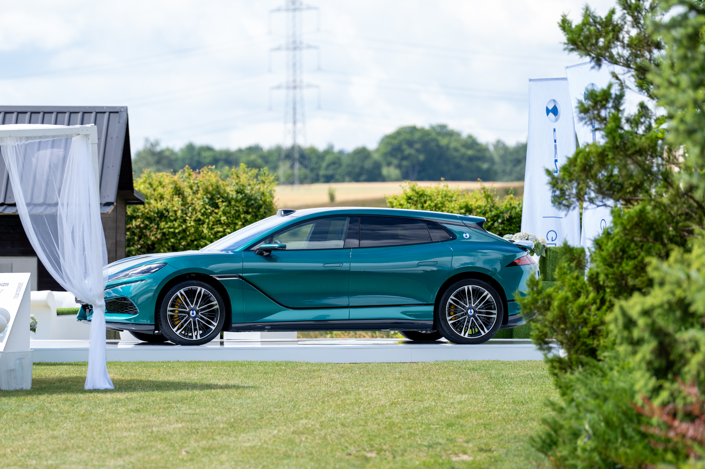
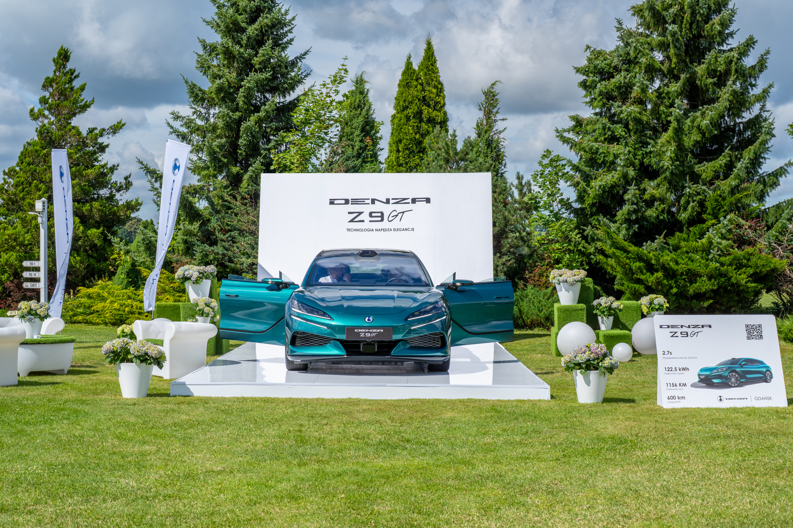
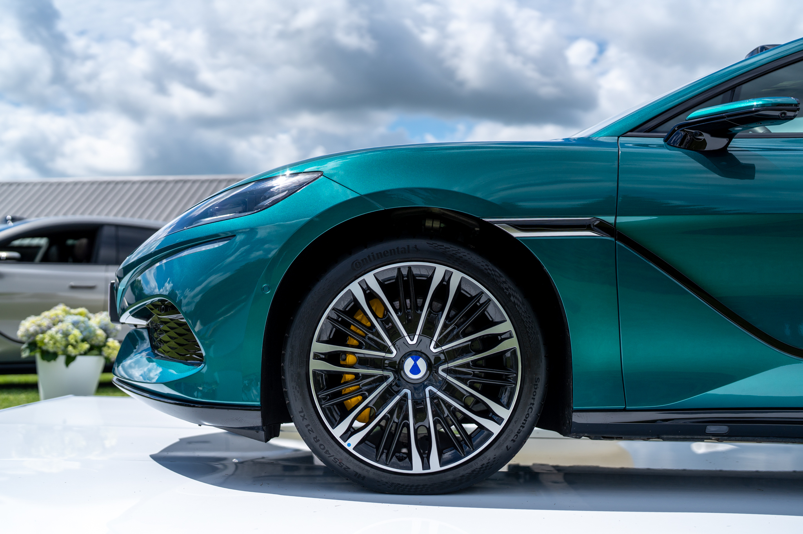
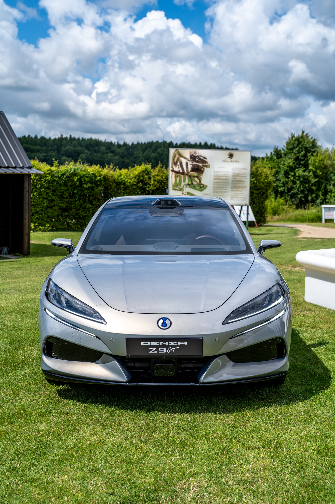
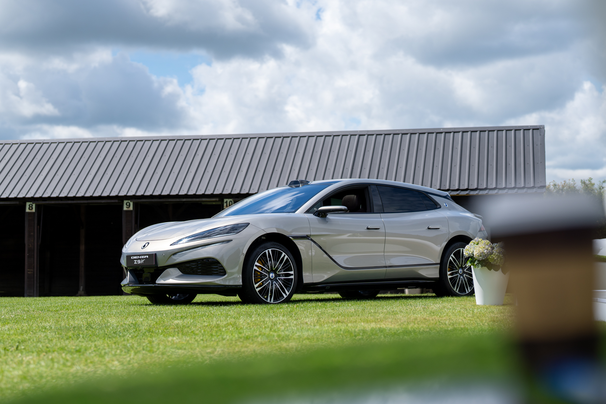
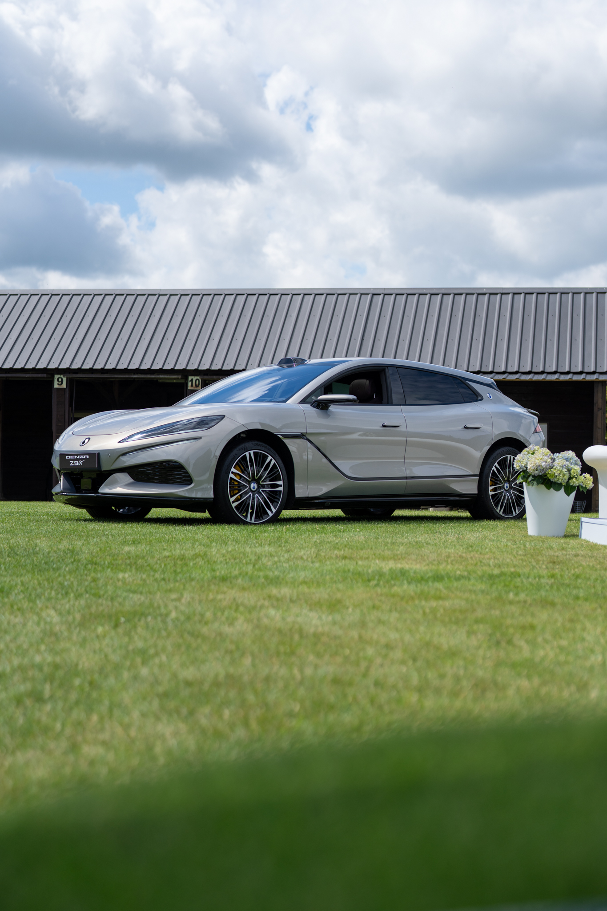
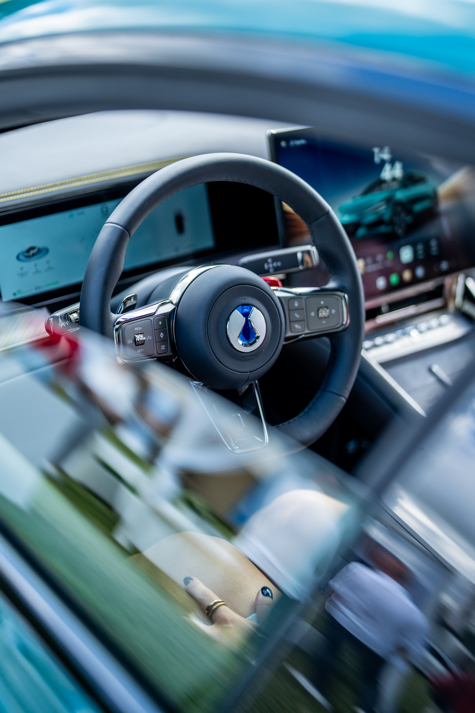
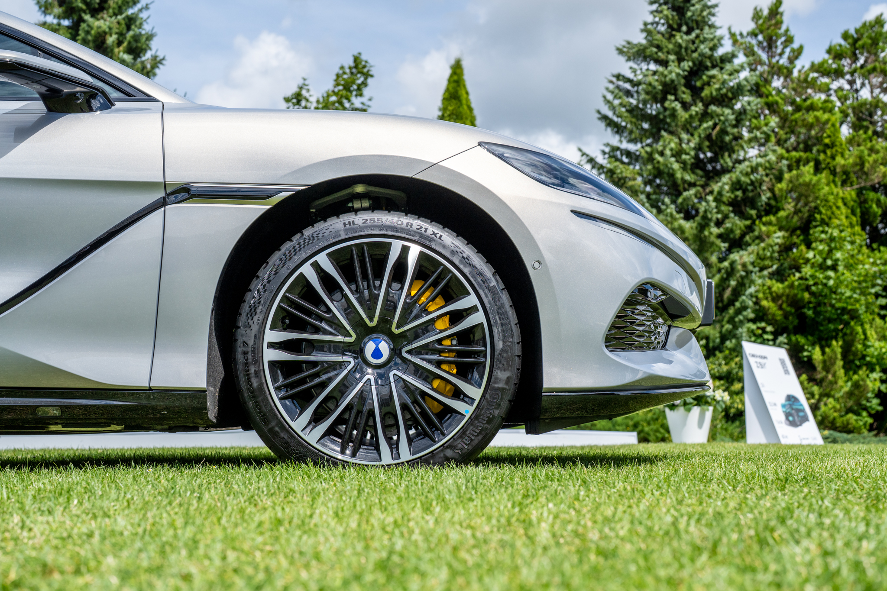

DENZA
Z9 GT.
Plenerowa premiera flagowego DENZA Z9 GT na polu golfowym w Tokarach pod Gdańskiem. Elektryczny gran turismo w scenerii, która podkreśla jego elegancję.
Elegancki debiut
w plenerowej scenerii.
Dla naszego wieloletniego partnera, Grupy Plichta, zrealizowaliśmy plenerową premierę flagowego DENZA Z9 GT. Marka premium potrzebowała oprawy, która połączy technologiczny charakter auta z lekką, letnią atmosferą wydarzenia.
Zamiast sali wystawowej postawiliśmy na pole golfowe w Tokarach: zieleń, białe podesty ekspozycyjne, hortensje i elegancki wystrój ogrodowy, na których morskie i srebrne nadwozia Z9 GT wyglądały jak na wybiegu.
Od scenografii
po materiały na żywo.
Scenografia i podesty
Białe, lakierowane podesty ekspozycyjne, ścianka premierowa Z9 GT, tablice ze specyfikacją i dekoracje kwiatowe wkomponowane w zieleń pola golfowego.
Ekspozycja modeli
Prezentacja dwóch wersji kolorystycznych Z9 GT, morskiej i srebrnej, ustawionych tak, by pokazać sylwetkę, detale nadwozia i 21-calowe felgi z pełną czytelnością.
Detale i wnętrze
Zdjęcia detali: reflektorów, felg, bordowej i ciemnej tapicerki oraz centralnego ekranu, pokazujące poziom wykończenia auta segmentu premium.
Content production na żywo
Pełna obsługa foto i wideo podczas wydarzenia: reportaż, ujęcia produktowe i materiały social gotowe do publikacji tuż po premierze.







„Plenerowa sceneria pola golfowego i dopracowana ekspozycja pozwoliły pokazać DENZA Z9 GT dokładnie tak, jak zasługuje marka premium: elegancko, spokojnie i z dbałością o każdy detal.”